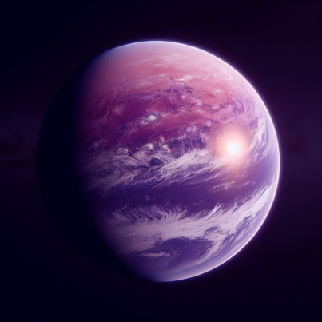
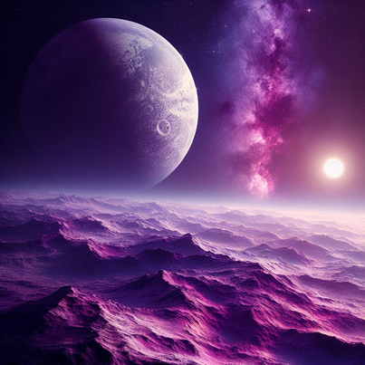
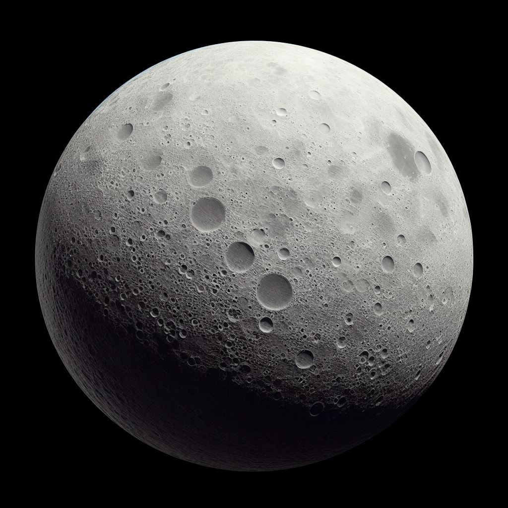
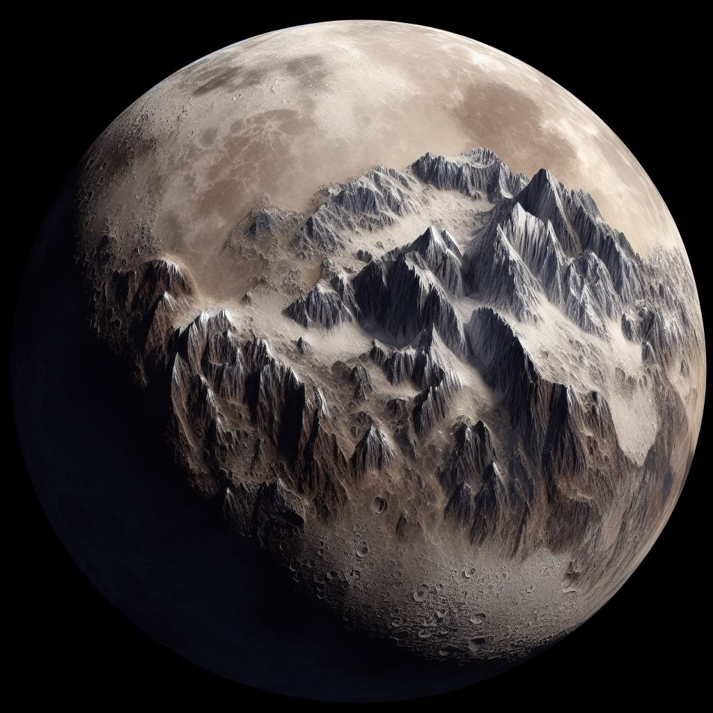
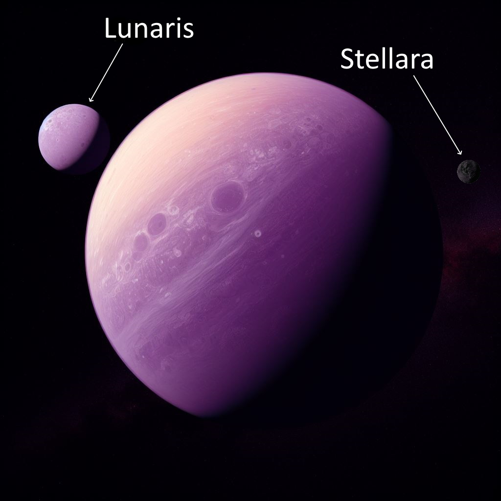
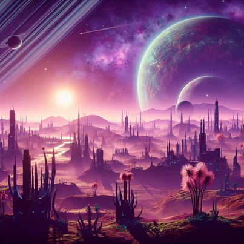

ABOUT THE EXOPLANET

Zephryon is located approximately 150 light-years away from Earth in the constellation of Aquilonis. It orbits the G-type star "Solara," which is similar in size and characteristics to our own sun.
Zephryon is a terrestrial exoplanet with a diameter about 1.5 times that of Earth.
GEOGRAPHY

The planet has a diverse climate due to its axial tilt, resulting in varied ecosystems and weather patterns. Zephryon has a breathable atmosphere with a composition similar to Earth, making it potentially habitable for humans.
The planet boasts vast, lush forests, expansive oceans, and towering mountain ranges. It is known for its breathtaking landscapes and unique geological formations. Zephryon orbits Solara at an average distance of approximately 120 million kilometers, putting it in the star's habitable zone.
MOONS
Lunaris

Lunaris, the larger of the two moons orbiting planet Zephryon, presents a unique lunar landscape. With a diameter approximately half that of Earth, it graces the Zephryonian night sky with its imposing presence. The moon's surface is marked by cratered terrain, revealing the scars of countless asteroid impacts over its history. These craters are of great interest to scientists studying lunar geology and planetary formation.
Lunaris possesses a thin atmosphere primarily composed of trace gases, rendering it inhospitable to humans without life support systems. Its extreme temperature variations, from frigid nights to scorching days, result from the absence of a substantial atmosphere for temperature regulation.
Despite these challenges, Lunaris offers captivating natural phenomena, including occasional "lunar lightning storms" that illuminate the night sky in breathtaking displays. It also experiences "moonquakes" caused by gravitational interactions with Zephryon and its companion moon, Stellara.
Lunaris serves as a hub for scientific missions and research outposts, drawing researchers from Zephryon and beyond. Tourists, too, are enticed by the moon's natural beauty and lunar eclipses that align it with Zephryon and Solara. Lunar expeditions offer adventurers a chance to explore its cratered surface and witness the wonders of lunar exploration up close. Lunaris stands as a testament to the intrigue and beauty of our celestial neighbors.
Stellara

Stellara, Zephryon's smaller moon, presents a captivating lunar world with its own unique charm. Roughly one-third the size of Earth, Stellara graces the night sky with an enchanting landscape.
Its surface is a picturesque blend of ice-covered plains and rugged, snow-capped mountains, earning it the poetic nickname "The Ice Jewel." Stellara's pristine, frozen beauty is a testament to the celestial artistry of the universe.
Though possessing a thin atmosphere primarily composed of trace gases, Stellara's climate is characterized by extreme cold, particularly during its extended nights. Despite its harsh environment, the moon occasionally experiences breathtaking ice storms, where swirling, frozen particles dance in the lunar winds.
Stellara holds great scientific appeal, attracting researchers eager to study its unique geological features, which provide valuable insights into lunar science and planetary evolution.
For adventurous tourists, guided expeditions offer the chance to explore Stellara's icy terrain, making it a sought-after destination for those seeking otherworldly experiences. In Zephryon's celestial neighborhood, Stellara shines as a captivating lunar gem, adding to the wonder of this fictional planetary system.
Zephryon with it's two moons

LIFE

Zephryon's lush forests are home to a wide array of plant life, including towering trees, colorful flowering plants, and sprawling vines. Some of these species have evolved to exhibit bioluminescence, creating stunning nighttime displays.
Zephryon's fauna is equally diverse, with creatures ranging from small, agile herbivores to massive, apex predators. Many species have adapted to the planet's unique ecosystems, boasting vibrant colors and unique adaptations.
CIVILIZATION

Zephryon is not just a pristine wilderness; it is also home to several thriving human settlements. The planet's largest cities include:
Aerion City: Located on the banks of a serene, bioluminescent river, Aerion City is known for its advanced technology and scientific research. It is a hub of innovation and education, boasting cutting-edge laboratories and universities.
Aquilara Haven: Nestled within the shelter of towering mountains, Aquilara Haven is a picturesque city known for its vibrant arts scene and cultural diversity. It features stunning architecture and hosts numerous festivals throughout the year.
Solstice Harbor: Situated on the coast of a vast ocean, Solstice Harbor is a bustling port city that connects Zephryon's diverse regions. It's a melting pot of cultures, commerce, and maritime exploration.
DAILY LIFE ON ZEPHRYON
Daily life on the fictional planet Zephryon, with its Earth-like characteristics and slightly stronger gravity, would be a unique and captivating experience. Here's a peek into what daily life might be like for inhabitants of Zephryon:
1. Morning Routines:
In the morning, residents of Zephryon wake up to a beautiful sunrise over the lush landscape. The slightly stronger gravity encourages morning stretches and exercises to maintain physical fitness.
Breakfast often consists of locally sourced fruits, grains, and dairy products, and it may be enjoyed while admiring the vibrant flora and fauna in their backyard gardens.
2. Work and Education:
Many inhabitants of Zephryon are engaged in scientific research, arts, and commerce. The major cities, such as Aerion City, Aquilara Haven, and Solstice Harbor, are hubs of activity where people commute to work or attend universities.
The advanced technology on Zephryon has led to innovative and sustainable approaches to various industries, including renewable energy, agriculture, and healthcare.
3. Cultural Activities:
Zephryon's diverse cultural heritage is celebrated through various events and activities. Residents may participate in music and dance performances, art exhibitions, and cultural festivals that showcase the unique traditions of different regions.
Aquilara Haven, known for its artistic community, often hosts art workshops and outdoor exhibitions against the backdrop of picturesque mountains.
4. Leisure and Recreation:
The planet's diverse landscapes offer plenty of recreational opportunities. Hiking in the lush forests, swimming in bioluminescent rivers, and winter sports in the mountainous regions are popular pastimes.
Zephryon's slightly stronger gravity provides a unique challenge for outdoor enthusiasts, making activities like rock climbing and extreme sports more exhilarating.
5. Dining and Cuisine:
Zephryon's cuisine is a fusion of flavors from different cultures. Meals often feature fresh, organic ingredients harvested from the planet's fertile lands and oceans.
Seafood is a delicacy in Solstice Harbor, while Aerion City is known for its innovative culinary scene, incorporating ingredients from the lush forests.
6. Nightlife:
Zephryon's night skies, with their familiar constellations and occasional auroras, provide a stunning backdrop for nighttime activities. Stargazing and astronomy clubs are popular, and some cities have rooftop bars with telescopes for patrons to enjoy.
The bioluminescent flora adds a magical touch to Zephryon's nights, creating natural light shows in gardens and parks.
7. Sustainable Living:
Zephryon places a strong emphasis on sustainability and environmental conservation. Residents actively engage in recycling, renewable energy practices, and efforts to preserve the planet's natural beauty.
The planet's advanced technology has led to eco-friendly transportation options, including electric vehicles and efficient public transit systems.
8. Exploration and Adventure:
Zephryon's diverse landscapes invite adventurers to explore its many wonders. From dense jungles to serene lakes and towering peaks, there's always something new to discover.
Expeditions to the two moons, Lunaris and Stellara, offer unique opportunities for scientific study and adventure tourism.
Daily life on Zephryon combines the comforts of Earth-like environments with the excitement of exploring an alien world. Its inhabitants enjoy a balanced blend of scientific progress, cultural richness, and a deep connection to the natural world, making it an inviting and intriguing place to call home.
TEAM
Sreeram R. (Team Leader)
Sreehari A. Menon
Allan Johnson
Sanvya Sandeep
THIS WEBSITE IS A PROJECT FOR NASA SPACE APPS CHALLENGE HACKATHON, THRISSUR.
All images used are from BING'S AI